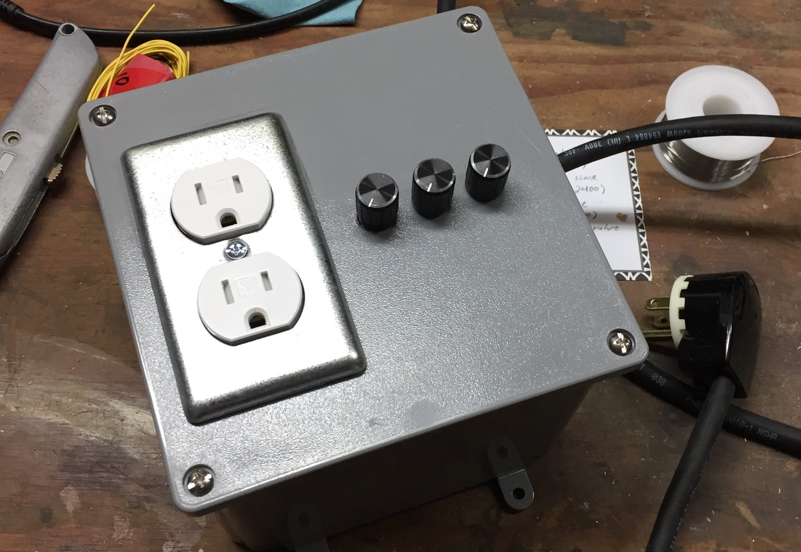
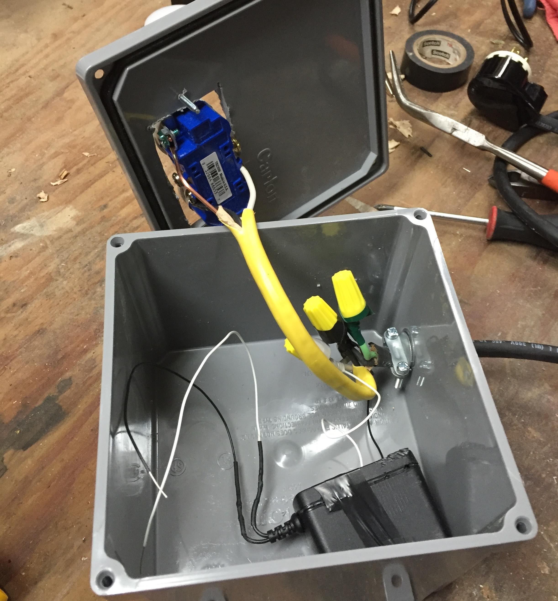
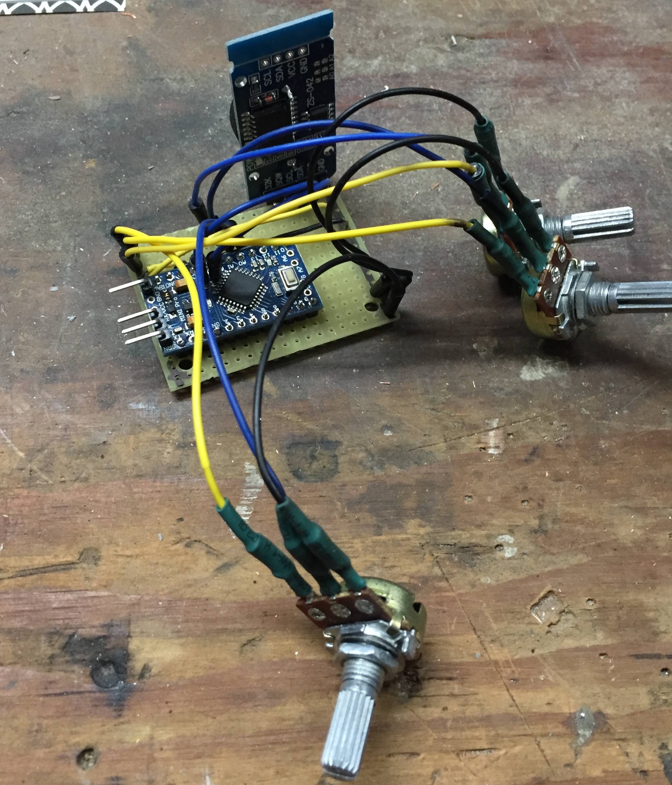
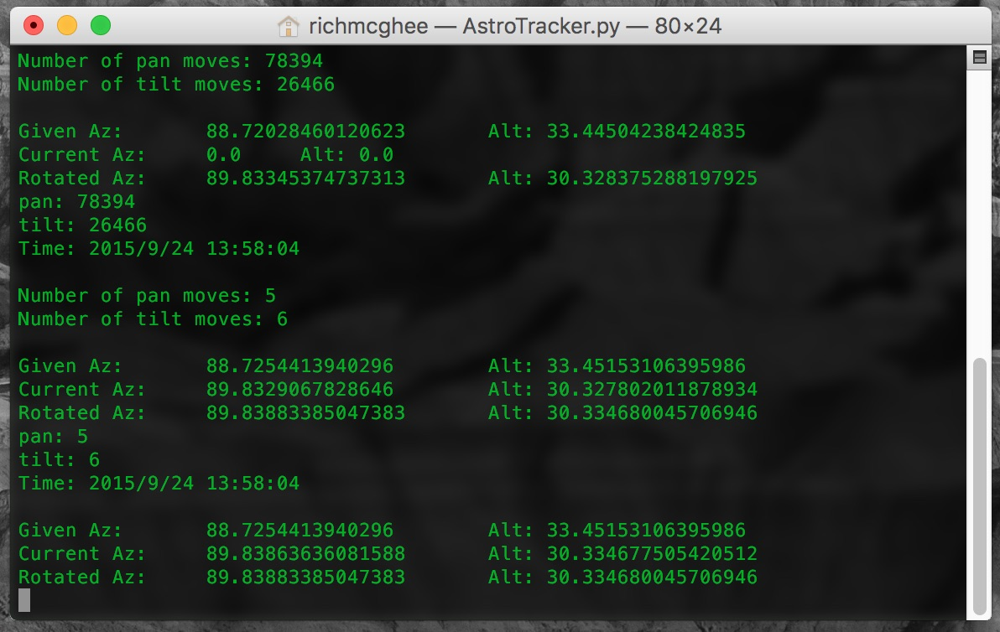
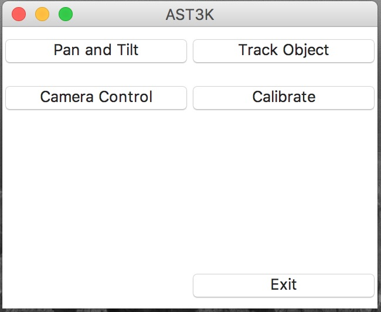
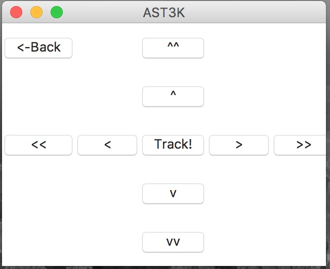
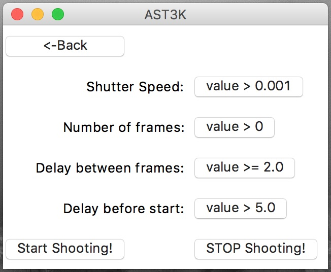
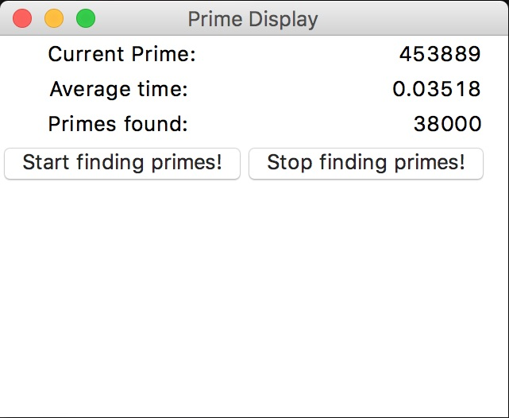

Projects
Salary and cost of living comparison site
Arduino based smart thermostat
Astro tracker
Sequential primes display
Single room smart thermostat

What is it?
This project uses C code on an Arduino Pro Mini to match room temperature to sleep wake cycles. A few studies have shown a correlation between body temperature and the sleep wake cycle. In particular, this study found convincing data to suggest that peripheral body temperature may serve as a key indicator of the body's impetus to sleep. This smart thermostat starts out the night with a comfortable temperature for going to sleep, and drops the temperature throughout the night to provide optimal conditions for deep sleep.

Motivation
- Reduce energy usage by warming the room only when the occupants will be sleeping in it.
- Make the room more comfortable for the occupants to fall asleep in. When peripheral body temperature drops, a subject starts to feel chilly. By raising the temperature of the room at the beginning of the night, this effect is counteracted.
- Reduce the temperature of the room throughout the night to provide a more optimal environment for deep sleep. As core body temperature drops, subjects are more likely to enter REM sleep, which is theorized to be an important part of the sleep cycle. Dropping the environmental temperatures make it easier for the body to enter this state.

Solution
My solution involves using an arduino to monitor the time and the environmental temperatures. The time interval and initial temperature settings are determined by the user using three labelled potentiometers. A space heater is plugged into a duplex outlet that is powered by a relay that is controlled by the arduino. As the night goes on, the set temperature drops as a percentage of the time interval that has passed. Within an hour of the set 'wake up' time, the temperature rises again to make waking up more comfortable.
Future modifications
This kind of device will become more common as the Internet of Things finds its way into our lives. In particular, a smart watch that monitors wrist temp (shown to be a key indicator of impending sleep by the above mentioned article) will be able to warm and cool a room based on the wearer's likeliness to initiate sleep. In fact, this could be used in conjunction with a sleep reminder system that helps people start and maintain a healthy sleep pattern.
DSLR mount tracker for astro photography (in progress)

What is it?
This project uses Python on a RaspberryPi to implement a 3 axis DSLR mount for astrophotography. Using this design, objects not rotating on the celestial plane (like the moon and artificial satellites) can be tracked with reasonable accuracy. Objects on the celestial plane (like galaxies and stars) can be tracked as well. The purpose for doing this is to enable longer exposures for photographs with more detail.

Motivation
- Given the proper data set, an alt-az-rot mount can track a wider variety of objects than a German Equatorial mount.
- An alt-az-rot mount can be calibrated using software to align it properly with the celestial sphere, a German Equatorial Mount can't.
- Good mounts are expensive. I quite enjoy astro photography, and this was a way to spend more time on it.

Solution
A program written in Python, using tkinter for the interface, and running on a RaspberryPi with a touchscreen for user input. The mathematics of tracking an object and moving to an object are complete. The program will interface with the camera as an intervalometer. Currently still pending is software calibration, completion of the GUI, and hardware.

Prime Finder

What is it?
PrimeFinder is the base code for a display piece. It finds prime numbers in sequential order and displays them, along with information about the average time to find each prime, and how many primes have been found since the program started.
Motivation
- Prime numbers are pretty neat.
- I'm planning a display piece that will constantly update information about the primes it has found, as well as information about how it found them.
Solution
A python program that uses tkinter for the GUI. As the display piece comes together, other information about the primes will be included, like a graph of how far apart primes are from their predecessor, and special colors for twin primes.
My portfolio is at http://RMcGhee.github.io/